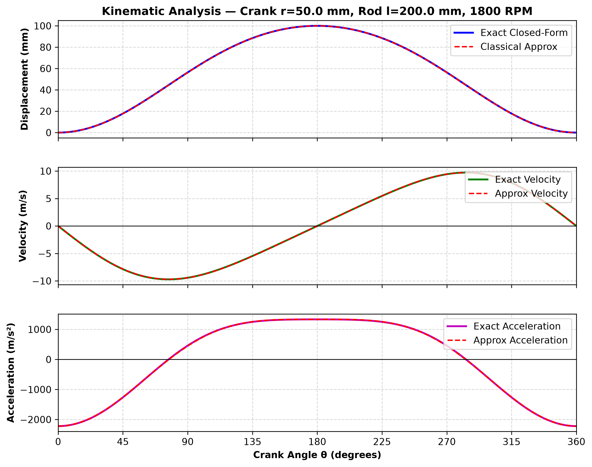
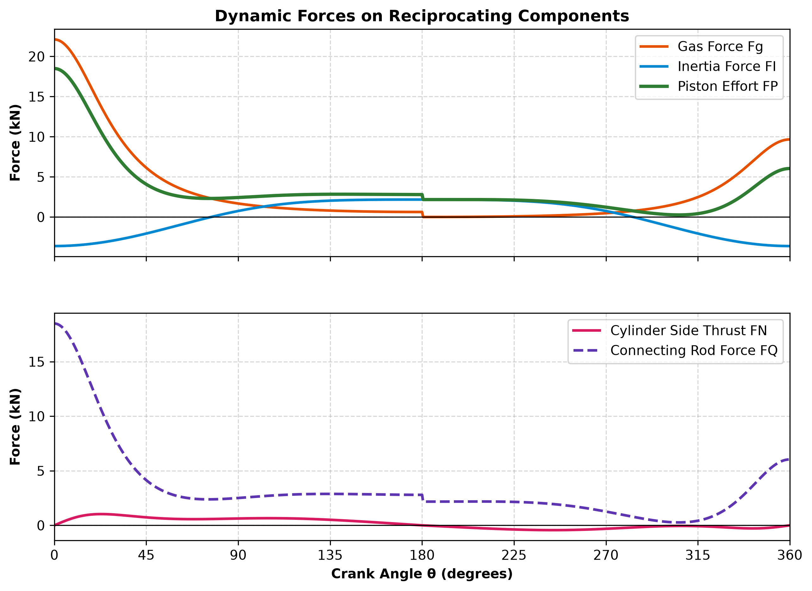
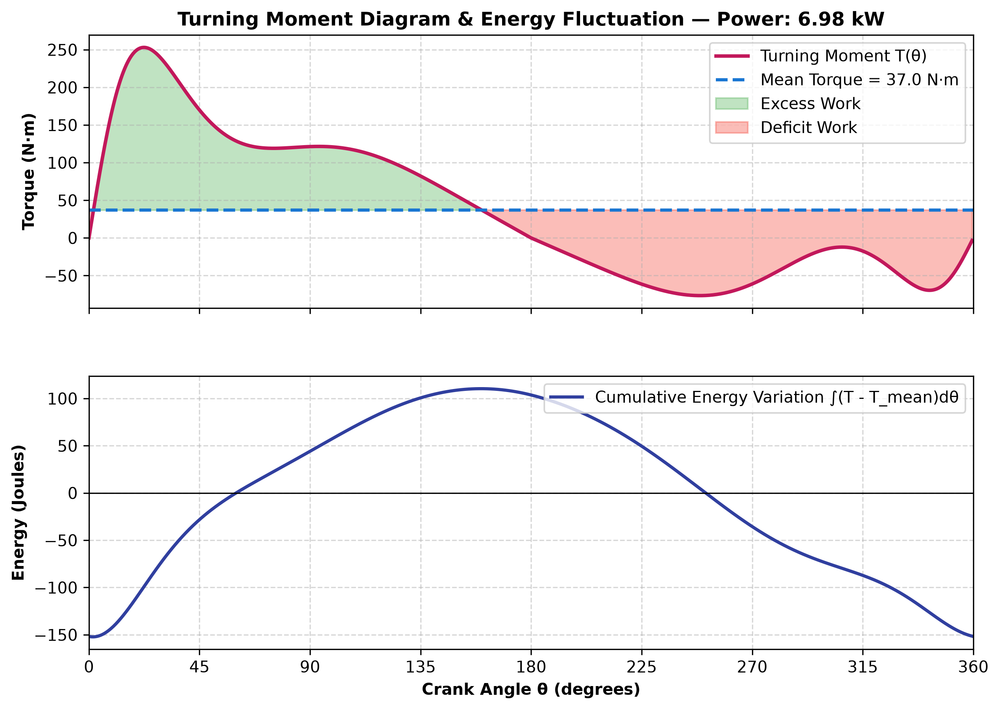
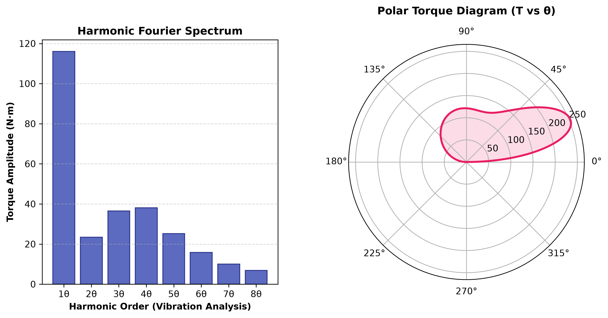

| Crank Radius (r): | 50.0 mm |
| Connecting Rod Length (l): | 200.0 mm |
| Obliquity Ratio (n = l/r): | 4.00 |
| Offset (e): | 0.0 mm |
| Stroke Length: | 100.0 mm |
| Cylinder Bore: | 80.0 mm |
| Swept Displacement Volume: | 502.7 cc |
| Crankshaft Speed: | 1800 RPM (ω = 188.5 rad/s) [Speed Range: 0 - 8000 RPM] |
| Reciprocating Mass (mp + rod): | 1.63 kg |
| Mean Piston Speed: | 6.00 m/s |
| Maximum Piston Speed: | 9.72 m/s (@ 76°) |
| Maximum Acceleration: | 2220.7 m/s² (@ 0°) |
| Mean Indicated Torque: | 37.0 N·m |
| Peak Indicated Torque: | 253.0 N·m |
| Engine Power Output: | 6.98 kW |
| Energy Fluctuation (ΔE): | 262.6 Joules |
| Coeff. of Fluctuation (Ce): | 1.128 |
| Required Flywheel Inertia: | 0.3695 kg·m² |
| Flywheel Mass (at R=125mm): | 23.65 kg |



